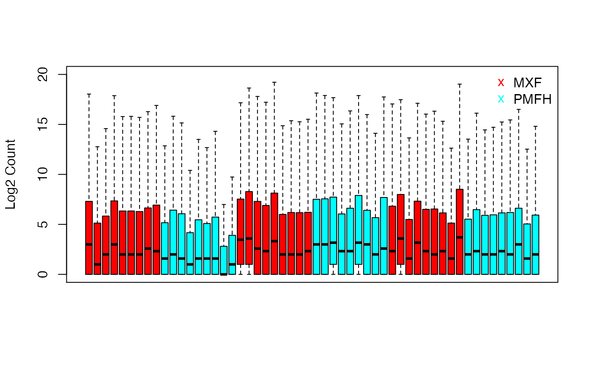
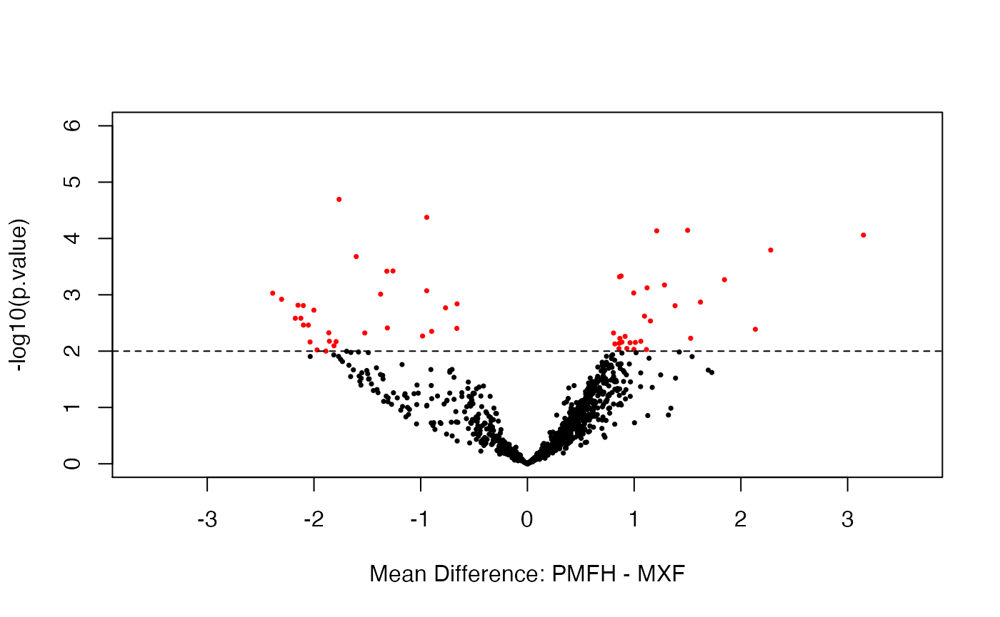
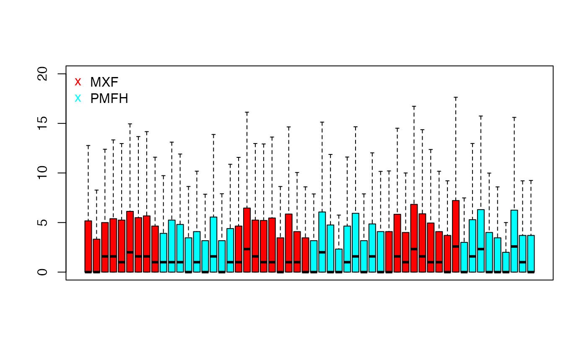
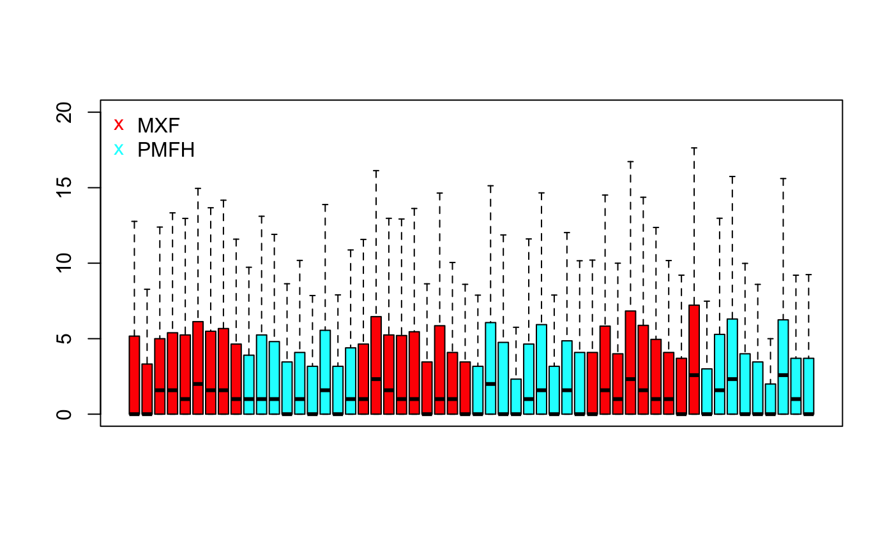
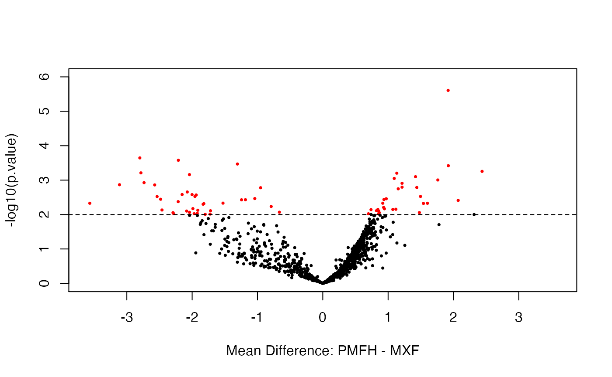

Intro_Data.RmdThe unique pair of miRNA sequencing data is collected from two of the most common and aggressive soft tissue sarcoma subtypes: myxofibrosarcoma (MXF) and pleomorphic malignant fibrous histiocytoma (PMFH). Collected at MSK between 2002 and 2012, 27 MXF samples and 27 PMFH samples including 1033 miRNA markers are extracted from newly diagnosed untreated tumors with sufficient quality and quantity. These samples are then measured twice separately. One of the obtained miRNA sequencing data (named as data.benchmark data in this package) is prepared by uniform handling and balanced sample-to-library-assignment minimizing artifact effects, which needs no normalization in the downstream analysis, while the other one (named as data.test data in this package) is collected in the usual way, which requires normalization for removing obscuring variability.
We show the boxplot of the log2(benchmark+1) for each sample.
benchmark.log <- log2(data.benchmark + 1) boxplot(benchmark.log, col = ifelse(grepl("MXF", colnames(benchmark.log)), rainbow(2)[1], rainbow(2)[2]), ylab = "Log2 Count", ylim = c(0, 20), xaxt = "n", outline = FALSE) legend("topright",c("MXF", "PMFH"), bty = "n", pch = "x", cex = 1, col = c(rainbow(2)[1], rainbow(2)[2]))

We continue to perform the DEA on benchmark data using voom-limma, and present the relationship between p-values and log fold change in volcano plot.
benchmark.voom <- DE.voom(RC = data.benchmark, groups = data.group, P = 0.01) DE.bench <- benchmark.voom$id.list benchmark.voom.dat <- data.frame(dm = benchmark.voom$p.val[,2], p.value = benchmark.voom$p.val[,1]) mask <- with(benchmark.voom.dat, p.value < .01) cols <- ifelse(mask,"red", "black") with(benchmark.voom.dat, plot(dm, -log10(p.value), cex = .5, pch = 16, col = cols, xlim = c(-3.6, 3.6), ylim = c(0, 6), xlab = "Mean Difference: PMFH - MXF")) abline(h = 2, lty = 2)

In the below scatterplot in log scale, red dots indicates the DE markers with p < 0.01 as cut-off point.
cols <- ifelse(rownames(benchmark.log) %in% DE.bench, "red", "black") plot(rowMeans(benchmark.log), apply(benchmark.log[,grepl("MXF", colnames(benchmark.log))], 1, mean) - apply(benchmark.log[,grepl("PMFH", colnames(benchmark.log))], 1, mean), pch = 16, cex = 0.5, col = cols, xlab = "Group Mean Average of Log2 Count", ylab = "Group Mean Difference of Log2 Count", main = "")

We show the boxplot of the log2(test+1) for each sample.
test.log <- log2(data.test + 1) boxplot(test.log, col = ifelse(grepl("MXF", colnames(benchmark.log)), rainbow(2)[1], rainbow(2)[2]), xaxt = "n", outline = FALSE, ylim = c(0, 20)) legend("topleft",c("MXF", "PMFH"), bty = "n", pch = "x", cex = 1, col = c(rainbow(2)[1], rainbow(2)[2]))

We continue to perform the DEA on test data using voom-limma without any normalization, and present the relationship between p-values and log fold change in volcano plot.
test.voom <- DE.voom(RC = data.test, groups = data.group, P = 0.01) test.voom.dat <- data.frame(dm = test.voom$p.val[,2], p.value = test.voom$p.val[,1]) mask <- with(test.voom.dat, p.value < .01) cols <- ifelse(mask,"red", "black") with(test.voom.dat, plot(dm, -log10(p.value), cex = .5, pch = 16, ylim = c(0, 6), xlim = c(-3.6, 3.6), col = cols, xlab = "Mean Difference: PMFH - MXF")) abline(h = 2, lty = 2)

pval.bench.test <- data.frame(cbind(bench.pval = benchmark.voom$p.val[,1], test.pval = test.voom$p.val[rownames(benchmark.voom$p.val),1])) attach(pval.bench.test) bench.sig <- (bench.pval < 0.01) test.sig <- (test.pval < 0.01) venn2 <- cbind(bench.sig, test.sig) vennDiagram(vennCounts(venn2), names = c("Benchmark", "Test"), cex = 1.5, counts.col = rainbow(1))
Scatterplot for the relationship between group means of benchmark and test data for MXF.
benchmark.log.MXF.mean <- rowMeans(benchmark.log[, grepl("MXF", colnames(benchmark.log))]) plot(benchmark.log.MXF.mean, rowMeans(test.log[,grepl("MXF", colnames(test.log))]), pch = 16, cex = 0.5, xlab = "Group Mean Average of Log2 Count in Benchmark", ylab = "Group Mean Average of Log2 Count in Test", main = "MXF", xlim = c(0, 20), ylim = c(0, 20)) abline(0,1)
Scatterplot for the relationship between group means of benchmark and test data for PMFH.
benchmark.log.PMFH.mean <- rowMeans(benchmark.log[, grepl("PMFH", colnames(benchmark.log))]) plot(benchmark.log.PMFH.mean, rowMeans(test.log[,grepl("PMFH", colnames(test.log))]), pch = 16, cex = 0.5, xlab = "Group Mean Average of Log2 Count in Benchmark", ylab = "Group Mean AVerage of Log2 Count in Test", main = "PMFH", xlim = c(0, 20), ylim = c(0, 20)) abline(0,1)
In this section, we will present how to use simu() function to generate desired simulated dataset. We will simulate all the possible datasets with proportion of DE between 0.0175 and 0.0225 and median of mean differences between -0.5 and 0.5.
simulated <- simu(proportion_L = 0.0175, proportion_R = 0.0225, median_L = -0.5, median_R = 0.5, numsets = 100) head(simulated$simulated_benchmark[[1]])[,1:5] #> D20 D8 D7 E3 E17 #> hsa-let-7a-2* 6 6 2 5 21 #> hsa-let-7a(3) 76141 18756 30934 69704 90362 #> hsa-let-7a*(2) 811 154 216 353 938 #> hsa-let-7b 48305 3001 8395 17920 30967 #> hsa-let-7b* 392 23 50 92 170 #> hsa-let-7c 10827 5961 5633 13838 16358 head(simulated$simulated_test[[1]])[,1:5] #> D20 D8 D7 E3 E17 #> hsa-let-7a-2* 2 0 2 0 6 #> hsa-let-7a(3) 72284 62888 89726 21107 30311 #> hsa-let-7a*(2) 363 593 368 137 163 #> hsa-let-7b 27736 4863 17546 4744 7626 #> hsa-let-7b* 112 46 48 15 50 #> hsa-let-7c 6951 20689 11921 4445 4349